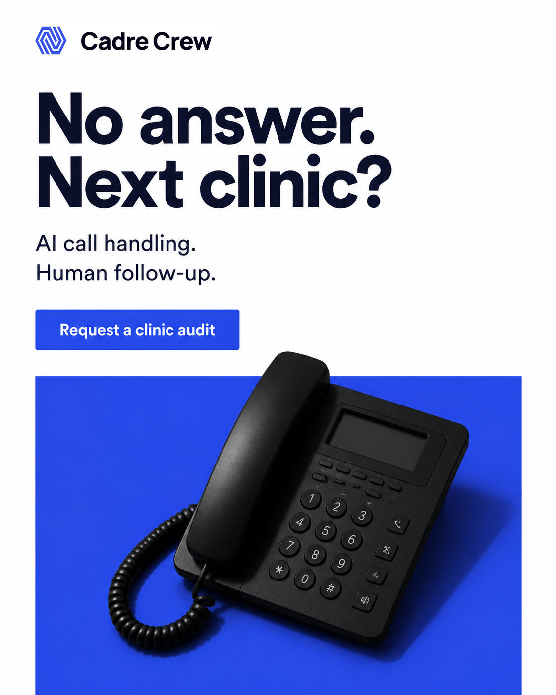
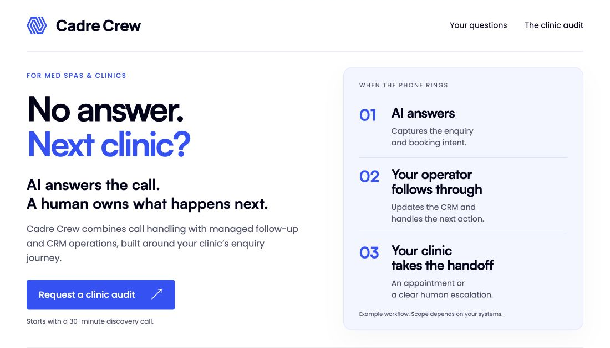
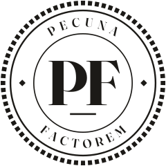
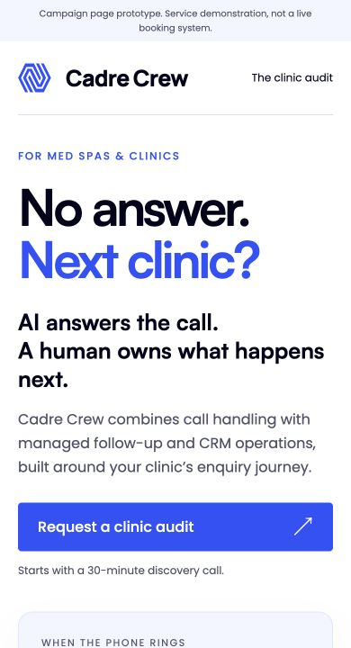

Our paid ads process
Complete reading view. All 29 chapters are visible without slide controls or JavaScript.
Match first. Rank next.
Andromeda helps Meta find relevant ads for each person.
Millions of ads
A relevant shortlist
Ranking + auction
Predicted outcomes, bid and ad quality.
An ad for this person
Delivery is personalised.
It is not an equal test.
Source: Meta Engineering, 2 December 2024. Simplified system diagram; no fixed two-ad rule.
Two ads take the spend.
Potential winners can stay hidden.
Highlighted lower rows are candidates for a fair test, not proven winners.
Illustrative figures, not account results. CPM = spend ÷ impressions × 1,000. Tiny samples are deliberately exaggerated.
Meta optimises for the event.
Equal spend across every ad is not the objective.
A conversion event
For example: a submitted lead form.
Who will complete it?
Delivery can concentrate on the ads expected to produce that result.
The event fires.
A lead or purchase appears in the results column.
But who did you acquire?
They might cancel after a month or request a refund.
Illustrative risks, not outcomes from the table.Define the buyer. Feed back quality. Align the message and optimisation signals with the customers you want.
Optimisation follows the selected performance goal, available signals and campaign constraints. Qualified-lead feedback can help align delivery with quality.
The buyer comes first.
Our unique paid ads process starts before we write an advert.
What are they afraid of?
What do they actually want?
Their own words
Fears, desires, objections and the moments that make people act.
Research informs the argument. Specialist skills turn it into the assets.
Cadre Crew campaign walkthrough. Illustrative examples, not client-approved or launched advertising.
Research shapes every asset.
One report. A shared understanding of the buyer.
Different assets. The same customer truth.
154 pages · 90 selected quote records. Selected qualitative evidence, not a population study.
The live ICP-Research-Radar document
Scroll inside the document. Use the separate PDF link if your browser cannot display PDFs inline.
Find the words that matter.
“Fear of bleeding money due to missed calls and losing clients to competitors.”RED-008 · p. 8 · Report finding
“Desire for a solution to handle peak hours and repetitive questions without hiring full-time.”RED-008 · p. 9 · Report finding
“Desire for fast support, free data migration, and month-to-month contracts.”RED-002 · p. 9 · Report finding
“i know exactly how many clients we're losing to this. someone googles medspa, tries calling, no answer, books at the place next door instead.”RED-008 · p. 13 · Public discussion quote
Report findings are analysis, not verbatim customer speech. Buyer wants are not automatically service promises.
Trace the argument backwards.
Keep the source, page and meaning.
RED-008 · p. 13Make the missed call visible
A phone in the advert. A clear owner on the page. A service explanation in the email.
Taylor reports two years of development, hundreds of refinements and thousands of pounds invested in the research skill.
Give each asset a job.
No answer. Next clinic?
Make the lost-booking consequence recognisable.

Who owns the next action?
Explain AI handling, human follow-up and the clinic handoff.

What still needs answering?
Return to the source, then explain systems fit and responsibility.
A human owns what happens next.
Common source: RED-008, p. 13. The headline is adapted copy; the source quotation remains exact.
The live campaign vision board
Existing proposed campaign board, preserved with its expanded email. Play, pause and inspect. It demonstrates planning, not a launched campaign.
Their words become the idea.
“someone googles medspa, tries calling, no answer, books at the place next door instead.”Public discussion excerpt, not a client testimonial.
Next clinic?
The headline dramatises the source moment without claiming every missed call becomes a competitor booking.
Design the decision first.
“missed calls and losing clients to competitors.”RED-008 · p. 8 · Report finding excerpt
The headline earns the first look. The phone makes the problem concrete.
The prompt specifies subject, style, composition, lighting, colour and aspect ratio. The commercial hypothesis comes first.
The logo is never generated.

Generate the scene and headline. Overlay the original client logo separately. Check spelling, hierarchy, negative space and spacing.
Can the headline be read at feed size?
Then check the placement crop and safe zones.The presentation coin stays vector. Static-image production composites the original client logo after generation.
A consequence, then a reason.
“someone googles medspa, tries calling, no answer, books at the place next door instead.”Public discussion excerpt, not a client testimonial.
No answer. Next clinic?
A missed ring can become somebody else’s booking.
Cadre Crew combines AI call handling with human follow-up in your CRM.
Before you add another tool, see who owns the next action.
Request a clinic auditStarts with a 30-minute discovery call.The audit is the next step, not a fictitious completed booking.
Diagnose before you write.
Cover the busy hours
Handle peak hours and repetitive questions without hiring full-time.
RED-008 · p. 9 · Buyer desireWhat do they know?
Unaware → problem-aware → solution-aware → product-aware → most aware.
Here, solution-aware is a working hypothesis, not a label for every visitor.What have they heard?
Familiar software promises make a concrete explanation of ownership worth testing.
Show how it works instead of making a bigger promise.BAM V2 separates knowledge from scepticism. Desire, awareness and sophistication answer different questions.
Seven techniques. One argument.
1The booking it costs is harder to see.
2Your receptionist is helping the patient in front of them.
3Review the gaps before choosing the fix.
4A human owns what happens next.
5Capture the enquiry → update the CRM → hand off.
6Before another tool, decide who owns the next action.
7An email from the named team, never a fake reply.
Practical applications of the skill. Intensification amplifies supported value; no technique substitutes for evidence.
Strengthen the supported idea.
07 / Dramatise a momentNo answer. Next clinic?
The selected headline makes the research situation immediate.
11 / Show the work handledAI answers. A human owns follow-up.
The alternative foregrounds the operating mechanism.
12 / Ask a useful questionWho calls back when your front desk can’t?
Test relevance, clarity, credibility and the promise delivered after the click.
Three examples from the skill’s 38-method working catalogue. Practical paraphrases, not a verified verbatim list from the book. Alternatives are hypotheses, not measured winners.
Answer the next question.
“missed calls”RED-008 · pp. 8–9 · Report findings
“without hiring full-time”
Start with an audit of the clinic’s actual systems.
Five selected objections, not a statistically ranked top five. Example scope depends on systems fit.
The reading order is designed.
1What could a missed enquiry be worth?
Review call volume, unanswered enquiries and appointment value. Build the case from the clinic’s numbers.
Will this work with our setup?
Check the existing CRM, booking tools and handoffs before recommending scope.
What happens to our data?
Map records, access, changeover checks and a fallback before any move.
Who owns follow-up?
Define the operator’s responsibilities and the Ops Lead’s oversight.
What am I agreeing to?
Review scope, fees and terms after discovery, before ongoing delivery.
Proposed attention path: value → systems fit → disruption → ownership → commitment. Not measured eye tracking. Test comprehension and qualified bookings.
Quality is a working gate.

Clear hierarchy and a demonstrating artefact.
Exact branding, readable contrast and usable controls.
Desktop and phone composed separately.
Motion explains the handoff, then stops.
Apps also need honest loading, error, retry and recovery states.
The skill name describes its required review process, not independent certification or proven conversion uplift.
How We Eliminate Tyre Kickers
How much enquiry work needs covering?
- Daily, recurring workload PASS
- Occasional enquiries REVIEW
- No ongoing workload DQ
- Not sure yet REVIEW
What is your main problem?
- Missed calls / follow-up PASS
- No-shows / booking PASS
- CRM admin / handoffs PASS
- No recurring problem DQ
What support do you want?
- Managed operations PASS
- Integration needs checking REVIEW
- Replacement clinical EMR DQ
- Low-cost software only DQ
Can you fund setup + monthly fees?
- Yes, if the fit is right PASS
- Need a costed proposal REVIEW
- No ongoing budget DQ
Who can approve this?
- I approve / joint decision PASS
- I can bring the approver PASS
- Approval path unclear REVIEW
- Cannot involve approver DQ
Any DQ closes the calendar. Otherwise, every question must be answered; REVIEW leads to a human fit check. All PASS answers indicate provisional fit only.
Preserved draft rules, pending client approval. Report pp. 4, 6–7. No numerical threshold approved. This demonstration submits nothing.
Filter fit, not patience.
No calendar
A respectful explanation, with a way to correct the answer or return later.
Human fit check
Resolve uncertainty before booking. No automatic nurture enrolment.
Provisional fit
Offer the discovery calendar. Technical scope still needs checking.
Website and Funnel Design defines the path. Breakthrough Advertising keeps the questions clear. Incomplete answers never unlock the calendar.
Return to their concern.
no answer · peak hours · without hiring full-time.
No answer. Next clinic?
A missed call is easy to overlook. The booking it costs is harder to see.
One public med spa discussion put it like this:
“someone googles medspa, tries calling, no answer, books at the place next door instead.”
Your receptionist can be helping the patient in front of them while the next one calls somewhere else.
And when the enquiry is written down in one place but the next action lives somewhere else, follow-up is easy to leave unfinished.
If the aim is to handle peak hours and repetitive questions without hiring full-time, the question is who takes responsibility after the call.
Worried about fitting this around your existing systems? That belongs in the audit before any build.
A human owns what happens next.
Cadre Crew combines AI call handling with human follow-up and CRM operations.
The AI handles the initial enquiry and qualification. An operator owns follow-up and keeps the CRM updated. One Ops Lead oversees the work.
The audit also identifies where a human needs to step in, rather than assuming every enquiry should follow the same automated path.
We review your enquiry-to-booking path, including systems fit and data handoffs, so you can assess the scope before choosing the fix.
Request a clinic audit
Start with a 30-minute discovery call.
The Cadre Crew team
Complete saved expanded email. Read left, then right; phone layout is a continuous column. Not sent. Identity, permission, cadence and unsubscribe configuration need approval.
Each paragraph earns the next.
Start with their moment
The subject returns to the same concern as the ad.
The receptionist is helping someone already. Respect the workload.
Make ownership visible
The argument is responsibility, not simply another tool.
Ask for the right commitment
Review systems fit and handoffs before choosing the fix.
One invitation: request a clinic audit.One organising desire, with useful new information in each paragraph.
Show what the words mean.
“someone googles medspa, tries calling, no answer, books at the place next door instead.”Public discussion excerpt, not a client testimonial.
A missed call is easy to overlook.
One public med spa discussion put it like this: “someone googles medspa, tries calling, no answer, books at the place next door instead.”
Cadre Crew combines AI call handling with human follow-up and CRM operations.
One Ops Lead oversees the work.
Request a clinic audit.
Start with a 30-minute discovery call to review your enquiry-to-booking path.
Original short concept retained unchanged. Not a finished video or a verified 60-second production script.
One argument across three layers.
The missed-call consequence
Recognisable source language, with attribution.
The operating mechanism
Call handling → human follow-up → CRM → clinic handoff.
The same next step
Request a clinic audit.
No invented first-person experience. No public quotation presented as a client testimonial.
Turn the argument into delivery.
The buyer argument
Choose a supported angle and earn the next step.
A coherent scene
Spoken delivery, on-screen words and visual continuity agree.
The finished creative
Assemble, review and verify the actual export.
The retained plan names Meta Maestro, UGC and ElevenLabs Flows. No final video was rendered for this example.
A booking is not the finish.
Before the call
After trusted booking confirmation, the page can set expectations. Configured, permissioned email and SMS can prepare the buyer.
On the call
Check fit, answer remaining questions and agree the next decision.
No calendar event, message, audience or automation activated. Retargeting eligibility does not guarantee an impression.
The advantage is accumulated.
The value is the decisions between the steps, not a single prompt.
Keep what proves useful
Review this presentation first. Then reverse-engineer the demonstrated method into Whiteboard Wednesdays.
Taylor also reports two years and thousands of pounds invested in website and funnel design. Owner-reported history, not guaranteed results. The new skill has not been built.